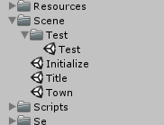

サンプル¶
サンプルシーン¶
二つのサンプルシーンを用意しています。
- 各コントロールの振る舞い確認できるサンプル
KsSoft/Scene/Test/Test.unity
- 実際のゲームを想定したサンプル
KsSoft/Scene/Initialize.unity
各コントロールの振る舞い確認できるサンプル¶
ほぼすべてのコントロールの振る舞いを確認できるサンプルです。
Consoleログには各種コールバック(onClick,onDrag等々)のログが出力するように作られています。 コールバックが実際にどのタイミング発行されるかを確認できます。 また、ドラッグ可能なコントロールは、全てドラッグできるようにスクリプト上で設定されています。
関係するコードは、次の通りです。
- KsSoft/Script/Test/Test.cs
- KsSoft/Script/Test/CWinTest.cs
- KsSoft/Script/Test/CWinTestBase.cs
- KsSoft/WindowResource/CWinTitle.wra
注釈
CWinTitle.wraを編集後、その動きを確認したいときは、実行前に Export Window Resource を呼び忘れないようにしてください。
実際のゲームを想定したサンプル¶
タイトル画面¶
CWinTitle.cs
- KsSoft/Script/Scene/Title/CWinTitle.cs
- KsSoft/Script/Scene/Title/CWinTitleBase.cs
- KsSoft/WindowResource/CWinTitle.wra

ホーム画面¶
CWinHome
- KsSoft/Script/Scene/Town/Home/CWinHome.cs
- KsSoft/Script/Scene/Town/Home/CWinHomeBase.cs
- KsSoft/WindowResource/CWinHome.wra
ギルドボタン、フレンドボタン、トレジャーボタン、画面中央のキャラクタをレンダリングしています。 RENDER の使い方の参考になります。
CWinTopPart
- KsSoft/Script/Scene/Town/CWinTopPart.cs
- KsSoft/Script/Scene/Town/CWinTopPartBase.cs
- KsSoft/WindowResource/CWinTopPart.wra
画面上部のキャラステータスや、レンダーアイコン部分を担当しています。
RENDERICON の使い方の参考になります。
CWinBottomPart
- KsSoft/Script/Scene/Town/CWinBottomPart.cs
- KsSoft/Script/Scene/Town/CWinBottomPartBase.cs
- KsSoft/WindowResource/CWinBottomPart.wra
画面下部のチャットボタンとメニューボタンのトグル部分を担当しています。
CWinTabbar
- KsSoft/Script/Scene/Town/CWinTabbar.cs
- KsSoft/Script/Scene/Town/CWinTabbarBase.cs
- KsSoft/WindowResource/CWinTabbar.wra
画面下部のメニューアイコン部分を担当してます。

チャットウィンドウ¶
CWinChat
- KsSoft/Script/Chat/CWinChat.cs
- KsSoft/Script/Chat/CWinChatBase.cs
- KsSoft/WindowResource/CWinChat.wra
CWinChatInput
- KsSoft/Script/Chat/CWinChatInput.cs
- KsSoft/Script/Chat/CWinChatInputBase.cs
- KsSoft/WindowResource/CWinChatInput.wra
CWinChatPerson
- KsSoft/Script/Chat/CWinChatPerson.cs
- KsSoft/Script/Chat/CWinChatPersonBase.cs
- KsSoft/WindowResource/CWinChatPerson.wra
チャットウィンドウの作り方の一例です。 チャットウィンドウの機能としては、ログウィンドウサイズの変更や、発言者に対応するアイコンを表示したりする方法のサンプルになっています。

プロフィールウィンドウ¶
CWinProfile
- KsSoft/Script/Scene/Town/Profile/CWinProfile.cs
- KsSoft/Script/Scene/Town/Profile/CWinProfileBase.cs
- KsSoft/WindowResource/CWinProfile.wra
横方向のリストボックスや、スワイプによるページ送りのサンプルになっています。 また、 RENDER の参考にもなります。

フレンドリストウィンドウ¶
CWinFriend,CWinFriendList,CWinFriendApply,CWinFriendBalcklist
- KsSoft/Script/Scene/Town/Friend/CWinFriend.cs
- KsSoft/Script/Scene/Town/Friend/CWinFriendBase.cs
- KsSoft/WindowResource/CWinFriend.wra
- KsSoft/Script/Scene/Town/Friend/CWinFriendList.cs
- KsSoft/Script/Scene/Town/Friend/CWinFriendListBase.cs
- KsSoft/WindowResource/CWinFriendList.wra
- KsSoft/Script/Scene/Town/Friend/CWinFriendApply.cs
- KsSoft/Script/Scene/Town/Friend/CWinFriendApplyBase.cs
- KsSoft/WindowResource/CWinFriendApply.wra
- KsSoft/Script/Scene/Town/Friend/CWinFriendBalcklist.cs
- KsSoft/Script/Scene/Town/Friend/CWinFriendBalcklistBase.cs
- KsSoft/WindowResource/CWinFriendBalcklist.wra
リストボックスのコンテンツ内容をアップデートする方法の一例です。
フレンドリストウィンドウ¶
CWinQuest
- KsSoft/Script/Friend/CWinFriend.cs
- KsSoft/Script/Friend/CWinFriendBase.cs
- KsSoft/WindowResource/CWinFriend.wra
- KsSoft/Script/Friend/CWinFriendList.cs
- KsSoft/Script/Friend/CWinFriendListBase.cs
- KsSoft/WindowResource/CWinFriendList.wra
- KsSoft/Script/Friend/CWinFriendApply.cs
- KsSoft/Script/Friend/CWinFriendApplyBase.cs
- KsSoft/WindowResource/CWinFriendApply.wra
- KsSoft/Script/Friend/CWinFriendBalcklist.cs
- KsSoft/Script/Friend/CWinFriendBalcklistBase.cs
- KsSoft/WindowResource/CWinFriendBalcklist.wra
リストボックスのコンテンツ内容をアップデートする方法の一例です。
クエストウィンドウ¶
CWinQuest
- KsSoft/Script/Scene/Quest/CWinQuest.cs
- KsSoft/Script/Scene/Quest/CWinQuestBase.cs
- KsSoft/WindowResource/CWinQuest.wra
ラジオボタンにコンテンツを関連付けて、タブのように振る舞わせる方法の例です。